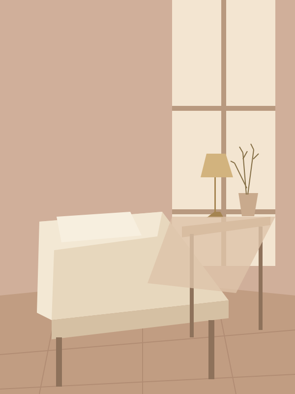

Ninety minutes, mostly spent looking and asking. A considered starting point with time for your questions.
QuietSkin

One room above a bookshop on Walcot Street. One treatment at a time. And no music unless you want it.
Quiet Skin imagines a slower kind of facial studio. A conversation first, thoughtful care second, and nothing sold to you on the bed.
Fictional studio concept. Practitioner training and credentials are not verified. Treatments need individual professional assessment and are not medical care.
A deep cleanse, gentle exfoliation and a long massage. Care is adjusted to your preferences and suitability.
A measured acid peel is described in the brief. Suitability, contraindications and any course of treatment require a qualified professional's assessment. No outcome is guaranteed.
The same unhurried care, for the part nobody reaches. Discuss your needs before agreeing a treatment.
Example durations and prices. Enquiries create no appointment.
Nothing rushed.
Nothing routine.
We talk first.
Ten minutes on what changed recently and what you want from your visit.
Cleanse, twice.
Once to take the day off, once to actually clean.
What feels right today.
Care is discussed in the room, not prescribed by a website.
The long massage.
Face, neck, shoulders and scalp, with your consent and comfort first.
Sunscreen and out.
No sales pitch. A written note if there is anything worth discussing.
A small shelf.
For a reason.
- Barrier repair creams
- Mandelic and lactic acids
- Low-dose vitamin C
- Mineral sunscreen
- Plain hot flannels
- Fragrance kept out
- Essential oils not a default
- Extractions by assessment
- Care without a sales pitch
- Privacy over before-and-afters
Examples, not personal skincare recommendations. Ask an appropriately qualified professional about suitability.
∿ ∿ ∿
Original still-life illustrations, not studio photographs.
“She told me my routine was too complicated and took four things out of it.”
Illustrative quote from the fictional studio brief. Individual experiences vary.